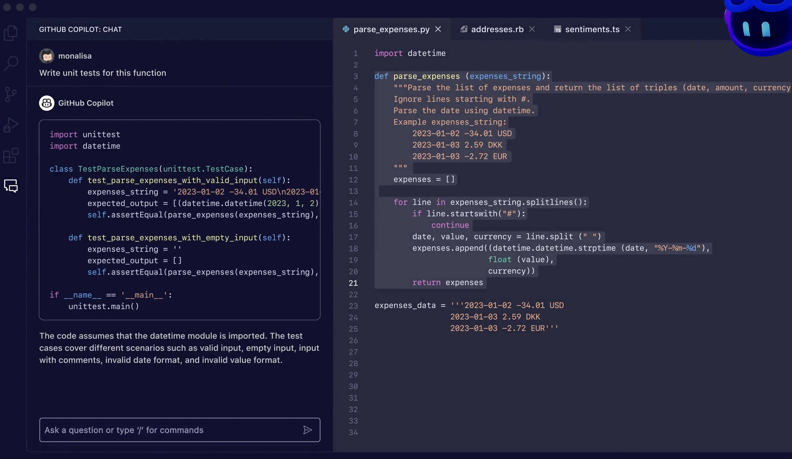

GitHub Copilot
GitHub Copilot is an AI-powered code completion tool developed by GitHub in collaboration with OpenAI. It is designed to assist developers in writing code by generating suggestions and completing code snippets in real-time.
GitHub Copilot utilizes machine learning models trained on a vast amount of publicly available code from various open-source repositories. It analyzes the context, syntax, and patterns in the code being written and suggests relevant code snippets or completions to accelerate the coding process.
The tool supports multiple programming languages and frameworks, making it versatile for a wide range of development projects. It can generate suggestions for entire functions, classes, or smaller code snippets, saving developers time and effort.
GitHub Copilot aims to enhance developer productivity and improve the coding experience. It is integrated into popular code editors, such as Visual Studio Code, allowing developers to seamlessly incorporate its suggestions into their workflow.
While GitHub Copilot can provide helpful suggestions and speed up coding tasks, it's important to note that it may occasionally generate incorrect or suboptimal code. Therefore, developers should review and validate the suggestions to ensure they align with the desired outcome and adhere to best practices.
GitHub Copilot represents an exciting development in the field of AI-assisted programming and has the potential to significantly assist developers in their coding endeavors.

Future programmers' access to tools such as GitHub Copilot may have the following effects on the state of the coding community:
- Increased Productivity: GitHub Copilot has the potential to significantly boost developer productivity. By providing intelligent code suggestions and completions, it can save time and effort, allowing programmers to focus on higher-level tasks and problem-solving rather than routine code writing.
- Rapid Prototyping: With AI-powered code completion, programmers can quickly generate code snippets for prototyping and experimentation. This can accelerate the development process, enabling faster iterations and reducing time to market for new ideas and projects.
- Learning and Skill Development: GitHub Copilot can serve as a valuable learning tool for novice programmers. By observing and incorporating its suggestions, developers can gain insights into coding best practices, patterns, and techniques, thereby enhancing their skills and knowledge.
- Code Quality and Consistency: The tool's intelligent suggestions can promote code consistency and adherence to coding standards. It can help identify potential errors, recommend optimizations, and encourage the adoption of established coding conventions, leading to improved code quality.
- Collaboration and Knowledge Sharing: GitHub Copilot can facilitate collaboration among programmers. It can assist in understanding and working with existing codebases, making it easier for developers to contribute to open-source projects and share knowledge within coding communities.
- Redefining Roles: With AI-powered code completion, the role of programmers may evolve. They can focus more on architectural design, problem-solving, and higher-level decision-making, while leveraging tools like GitHub Copilot for routine code generation and implementation.
- Ethical Considerations: The use of AI tools in programming raises ethical considerations. It becomes crucial to ensure that the generated code aligns with ethical guidelines, security standards, and legal requirements. Developers must exercise caution and review the suggestions to avoid potential biases or unintended consequences.
Overall, if programmers can effectively work with tools like GitHub Copilot, it has the potential to streamline development processes, enhance collaboration, and advance the overall efficiency and quality of software development. However, it's important to strike a balance between automation and human expertise to ensure responsible and thoughtful use of AI in coding practices.